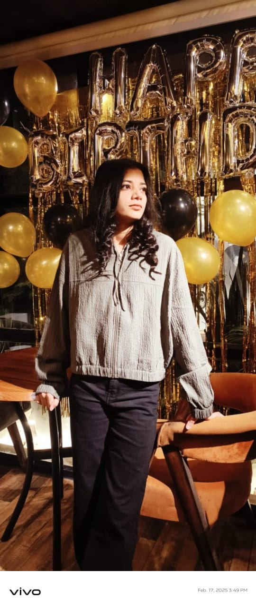

B.tech CS(AI/ML)
This portfolio showcases my journey as a B.Tech student with a strong interest in software development and problem-solving. It highlights my technical skills, academic projects, hands-on experience with data structures, databases, and full-stack development, along with my passion for building scalable and efficient solutions. The goal of this portfolio is to demonstrate my readiness for real-world challenges and internship opportunities in top product-based companies.